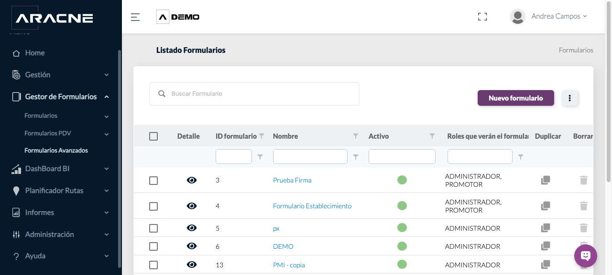
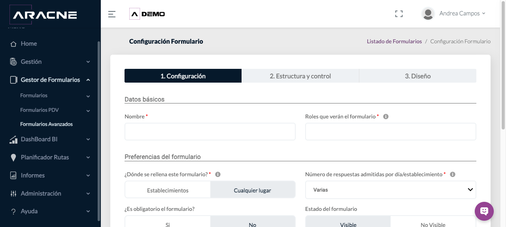

Back Office
Formularios Avanzados
Configurar formularios complejos, organizarlos en secciones, definir campos y dependencias, y asignarlos a establecimientos.
Requisitos
Roles, establecimientos y catálogos necesarios creados.
Dónde estáGestor de Formularios › Formularios Avanzados
Procedimiento
- Abre Nuevo formulario avanzado. En Configuración indica Nombre, Roles que verán el formulario, dónde se rellena, número de respuestas, obligatoriedad y estado.

Paso 1. Listado y acciones de Formularios Avanzados. 
Paso 1. Configuración y pestañas del editor de Formularios Avanzados. - Define si se registrarán horas y coordenadas, si habrá alertas y, cuando proceda, los destinatarios.
Paso 2. Configuración y pestañas del editor de Formularios Avanzados. - Continúa a Estructura y control. Añade secciones con un nombre claro y ordénalas según el trabajo de campo.
Paso 3. Configuración y pestañas del editor de Formularios Avanzados. - Añade campos dentro de cada sección. Indica Nombre del campo, Tipo de campo y descripción; activa solo las opciones necesarias.
Paso 4. Configuración y pestañas del editor de Formularios Avanzados. - Configura validación por longitud, rango numérico, escala u opciones cuando el tipo de campo lo permita. Marca Campo obligatorio cuando deba impedirse una respuesta incompleta.
Paso 5. Configuración y pestañas del editor de Formularios Avanzados. - Crea dependencias seleccionando Origen, Valores del campo de origen, Habilitar y Campo/Sección que habilita.
Paso 6. Configuración y pestañas del editor de Formularios Avanzados. - Revisa Diseño para confirmar orden, agrupación y comprensión.
Paso 7. Configuración y pestañas del editor de Formularios Avanzados. - Asigna el formulario a los establecimientos correspondientes desde la opción de asignación del formulario.
Paso 8. Listado y acciones de Formularios Avanzados. - Activa el formulario y comprueba su disponibilidad con un usuario del rol asignado.
Paso 9. Listado y acciones de Formularios Avanzados.
Campos y controles
- Roles que verán el formulario: perfiles que reciben el formulario.
- Dónde se rellena: contexto de cumplimentación.
- Número de respuestas por día/establecimiento: frecuencia admitida.
- Campo activo y obligatorio: disponibilidad y exigencia.
- Traer respuestas anteriores: recupera datos previos cuando se configura.
- Origen y valor: condición que dispara la dependencia.
- Habilitar y Campo/Sección que habilita: efecto de la condición.
- Asignación a establecimientos: limita dónde debe aparecer.
Resultado esperado
El formulario activo aparece para los roles y establecimientos asignados, con secciones, reglas y dependencias previstas.
Cómo comprobarlo
Usa un perfil de prueba del rol: abre el establecimiento, entra al formulario, recorre secciones, activa cada dependencia y confirma obligatoriedad y límites.
Problemas habituales
- Si no aparece, comprueba estado, rol y asignación al establecimiento.
- Si una dependencia no se activa, revisa el campo de origen y el valor exacto.
- Si un campo queda fuera de lugar, revisa su sección y el orden en Diseño.
- Si no permite finalizar, localiza los campos obligatorios sin respuesta.
Operaciones relacionadas
Puntos de VentaFotos de Formularios AvanzadosPromotor y app móvil